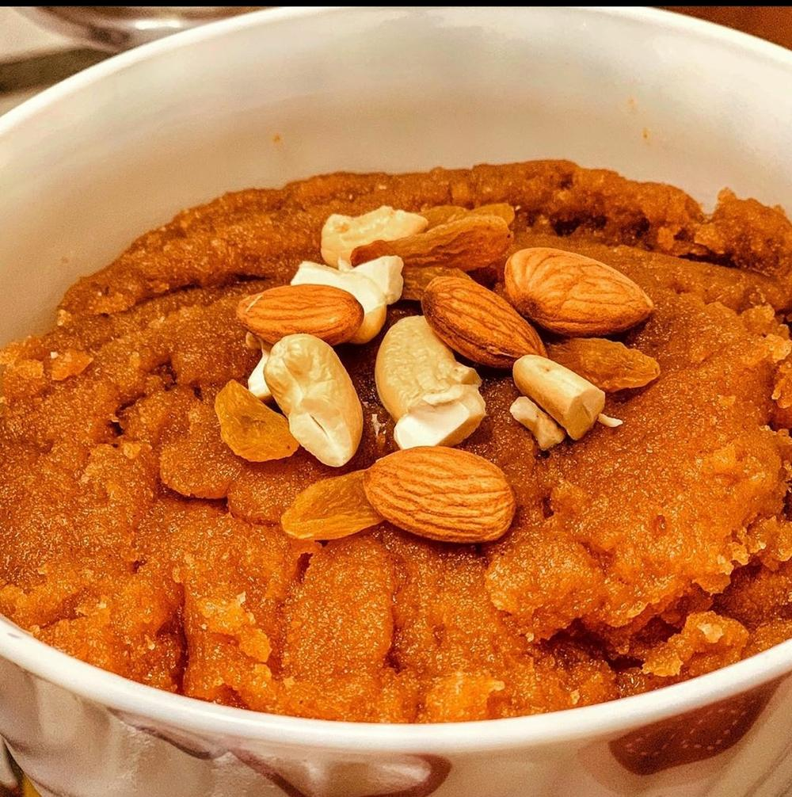

Atte Ka Halwa
wholewheat flour roasted in ghee until nutty, then swelled with hot sugar syrup

Contains: milk, gluten, tree nuts
Checked against the ingredient list for milk, egg, fish, crustaceans, tree nuts, peanuts, sesame, mustard, soy and gluten. Nothing else is checked, and brands vary, so read the label on anything you have not bought before.
Ingredients
Quantities for 4.
- 150g Atta
- 150g Gheeequal weight to the flour; this is not the place to economise
- 150g Sugar
- 600ml Water
- 100ml Milkreplacing part of the water gives a softer halwaoptional
- 5 pods, seeds crushed Cardamom
- 2 tbsp, slivered Almondsoptional
- 2 tbsp Raisinsoptional
- a pinch, soaked in 1 tbsp warm milk Saffronoptional
Cookware
kadhai, stovetop
Before you start
- Measure the flour, ghee and sugar by equal weight and have the syrup already hot before you start roasting. Halwa gives you no time to improvise mid-way.
- Bring the water and sugar to a boil in a separate pan and keep it simmering. Cold syrup hitting hot flour makes lumps and spits violently.
- Use a heavy kadhai. A thin pan scorches the flour in the last five minutes when it needs the most attention.
Method
- Boil the water, milk and sugar together in a saucepan until the sugar dissolves, then keep it on the lowest heat.
- Melt the ghee in a heavy kadhai over low-medium heat and add the atta all at once.
- Stir constantly for 15-18 minutes. The mixture goes from pale and pasty, to loose and sandy, to a deep reddish-brown that smells like biscuits.There is no shortcut. Under-roasted atta tastes floury and raw no matter how much ghee or sugar you add later.
- Watch for the ghee to separate and pool around the edges of the mass. That is the signal the flour is done.
- Add the almonds and raisins and stir 1 minute so they toast in the ghee.
- Take the kadhai off the flame, stand back, and pour in the hot syrup in three additions, stirring hard between each.It will hiss and erupt. Off the flame and in stages is the only safe way to do this.
- Return to low heat and stir until the halwa thickens and pulls away from the sides of the pan, about 5 minutes.
- Stir in the crushed cardamom and the saffron milk, cover and rest 5 minutes off the heat.
- Serve warm, spooned into bowls, with the surface ghee left glistening on top.
Storage
Keeps 4 days refrigerated in a covered box. It sets firm when cold; reheat in a pan on low with 2 tbsp milk, stirring until it loosens. Do not microwave, which makes it rubbery.
Nutrition Low estimate
| Per serving153 g | Per 100 g | |
|---|---|---|
| Calories | 680 kcal | 444 kcal |
| Protein | 6.4 g | 4 g |
| Carbohydrate | 74.3 g | 48 g |
| of which sugars | 44.4 g | 29 g |
| Fibre | 6.1 g | 4 g |
| Fat | 42.6 g | 28 g |
| of which saturated | 24.1 g | 16 g |
| of which unsaturated | 16.2 g | 11 g |
A rough guide only. A large part of this ingredient list is given to taste rather than by weight, or much of what is weighed is not eaten. Much of the weighed input may not be eaten. Syrup left in the bowl, or batter that yields more than the stated servings, means the real figure is likely lower than this. Estimated from raw ingredients using USDA FoodData Central. Cooking changes are not modelled, and added salt is excluded, so sodium is not given.
Written and checked against sources, not cooked in a test kitchen. Times, yields and keeping times are guides, and the allergen and nutrition figures are worked out from the ingredient list rather than measured. Use your own judgement, particularly on doneness and on anything you are storing or reheating. More in About.